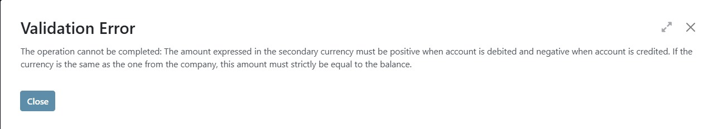
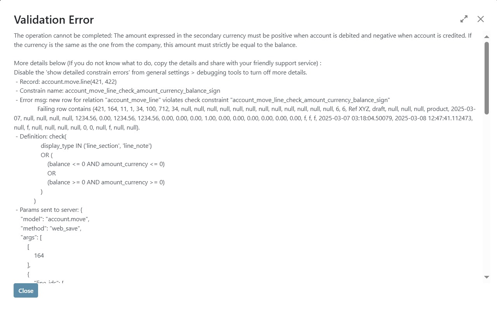
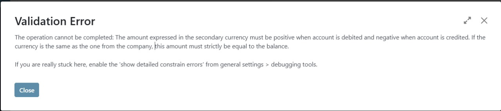
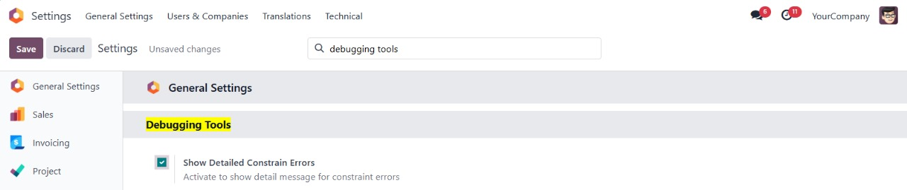

This module enhances the standard Odoo error handling mechanism by providing detailed information when a constraint error is triggered. It helps developers and users quickly identify and resolve issues related to constraint violations by offering valuable debugging information such as the name of the record that caused the error, the specific constraint that was violated, the constraint's definition, the parameters sent to the server, and the data that led to the error. The module is compatible with Community, Enterprise, and Odoo.sh editions.
This module is particularly useful for Odoo developers who need a deeper understanding of why constraint errors are occurring, especially in complex business logic or when working with custom constraints. It can also be valuable in production environments where debugging tools are limited and quick resolution of constraint issues is critical.

